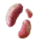
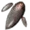

+
Fruit of Magic Power
1
🔗
+
How to Obtain
Farming (Breeding)
 Emperor Mushroom
 Fortune Teller Mushroom
Hump Mushroom
Tiger Mushroom
Gathering
Wild Herb (Behr)
+
Used In Recipe
🔗
[Guild] Old Moon Magic Neutralizer
Oil of Tranquility
And More...